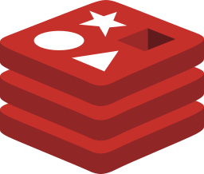
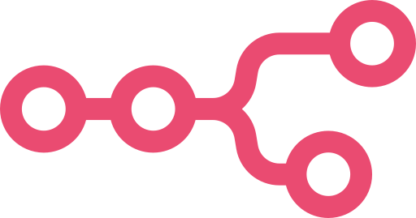
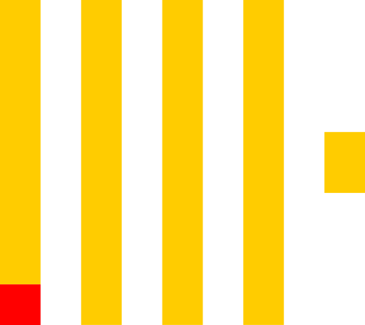
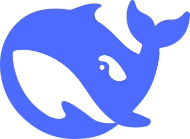

Team acme · 6 projects, 2 on staging

3 running · 1 building · 1 failed · 1 stopped

4 running

4 running · 1 stopped

5 running · 1 building · 1 stopped
2 running
2 running · 1 failed
Suggestions